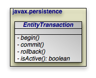

|  |
JPA integrates with your container's managed transactions,
allowing you to use the container's declarative transaction demarcation and its
Java Transaction API (JTA) implementation for transaction management. Outside of
a container, though, you must demarcate transactions manually through JPA. The
EntityTransaction interface controls unmanaged
transactions in JPA.
public void begin(); public void commit(); public void rollback();
The begin, commit, and
rollback methods demarcate transaction boundaries. The
methods should be self-explanatory: begin starts a
transaction, commit attempts to commit the
transaction's changes to the datastore, and rollback
aborts the transaction, in which case the datastore is "rolled back" to its
previous state. JPA implementations will automatically roll back transactions if
any exception is thrown during the commit process.
Unless you are using an extended persistence context, committing or rolling back
also ends the persistence context. All managed entities will be detached from the
EntityManager.
public boolean isActive();
Finally, the isActive method returns true
if the transaction is in progress (begin
has been called more recently than commit or
rollback), and false otherwise.
Example 9.1. Grouping Operations with Transactions
public void transferFunds(EntityManager em, User from, User to, double amnt) {
// note: it would be better practice to move the transaction demarcation
// code out of this method, but for the purposes of example...
Transaction trans = em.getTransaction();
trans.begin();
try
{
from.decrementAccount(amnt);
to.incrementAccount(amnt);
trans.commit();
}
catch (RuntimeException re)
{
if (trans.isActive())
trans.rollback(); // or could attempt to fix error and retry
throw re;
}
}